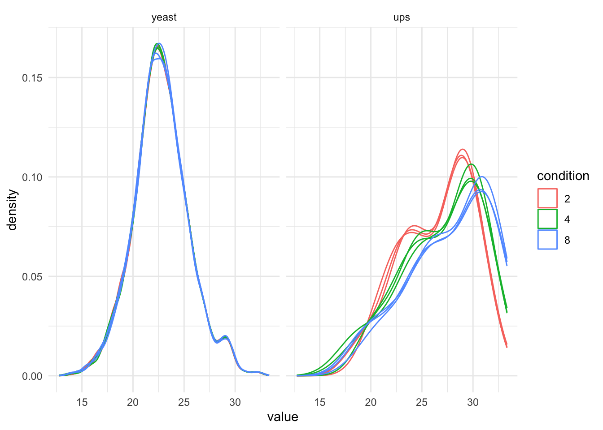
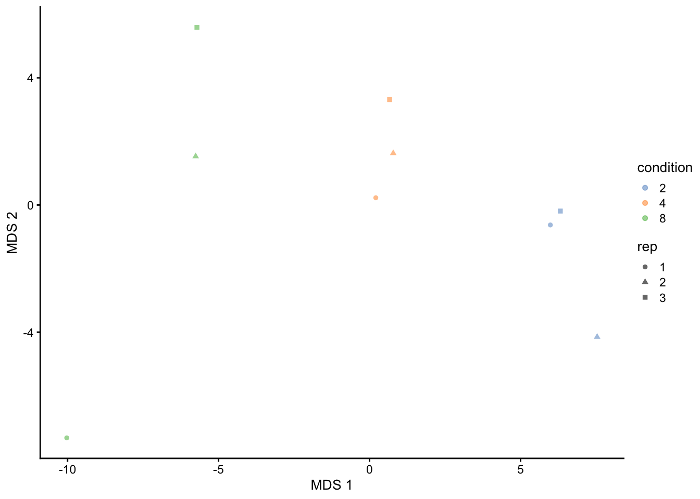
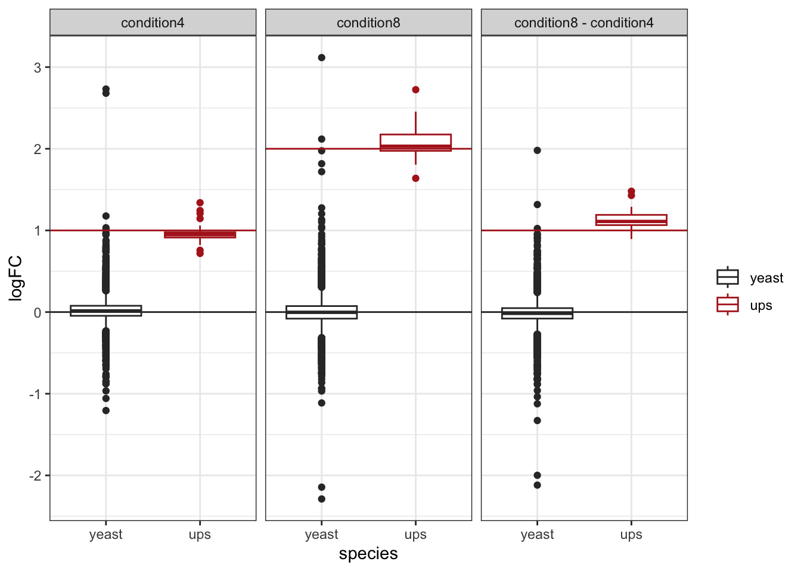
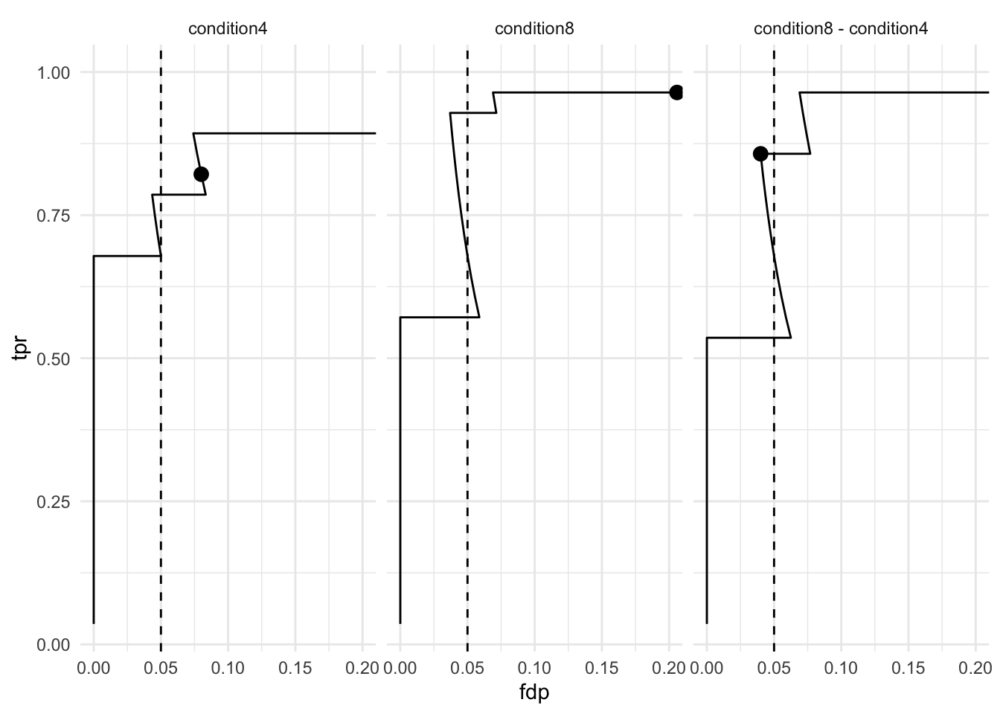
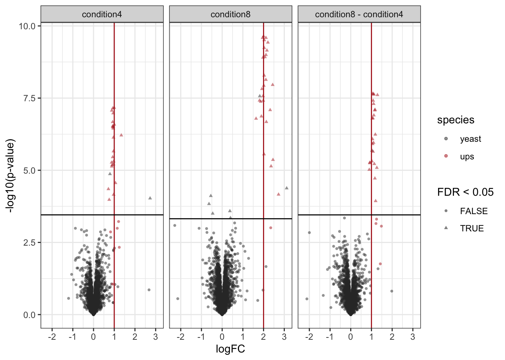

library("QFeatures")
library("dplyr")
library("tidyr")
library("ggplot2")
library("msqrob2")
library("stringr")
library("ExploreModelMatrix")
library("MsCoreUtils")
library("matrixStats")
library("patchwork")
library("kableExtra")
library("ComplexHeatmap")
library("purrr")
library("tibble")
library("scater")Differential abundance analysis with DIA-NN - starting from proteins groups table
We will now make a QFeatures object starting from the protein level summaries from DIA-NN. Normally we would start from the protein groups file that is provided by DIA-NN, i.e. the pg_matrix.tsv.
proteinGroupFile <- "data/spikein248-staesetal2024.pg_matrix.tsv"
proteins <- data.table::fread(proteinGroupFile)We add species information. Possible for this specific dataset, which is a benchmark dataset with lysate from human UPS proteins and Yeast proteins.
proteins <- proteins |>
mutate(species = grepl(pattern = "UPS",Protein.Group) |>
as.factor() |>
recode("TRUE"="ups","FALSE" = "yeast"))
proteins |>
pull(species) |>
table()
yeast ups
3663 31 The protein group table is a file in wide format. The columns with the raw file names contain the maxLFQ protein group intensities for the different samples.
quantCols <- grep(".raw",names(proteins))
names(proteins)[quantCols][1] "S:\\Proteomics_Restored\\6883\\DIA\\raw\\B000254_Ap_6883_EXT-765_DIA_Yeast_UPS2_ratio02_DIA.raw"
[2] "S:\\Proteomics_Restored\\6883\\DIA\\raw\\B000258_Ap_6883_EXT-765_DIA_Yeast_UPS2_ratio04_DIA.raw"
[3] "S:\\Proteomics_Restored\\6883\\DIA\\raw\\B000262_Ap_6883_EXT-765_DIA_Yeast_UPS2_ratio08_DIA.raw"
[4] "S:\\Proteomics_Restored\\6883\\DIA\\raw\\B000278_Ap_6883_EXT-765_DIA_Yeast_UPS2_ratio02_DIA_2.raw"
[5] "S:\\Proteomics_Restored\\6883\\DIA\\raw\\B000282_Ap_6883_EXT-765_DIA_Yeast_UPS2_ratio04_DIA_2.raw"
[6] "S:\\Proteomics_Restored\\6883\\DIA\\raw\\B000286_Ap_6883_EXT-765_DIA_Yeast_UPS2_ratio08_DIA_2.raw"
[7] "S:\\Proteomics_Restored\\6883\\DIA\\raw\\B000302_Ap_6883_EXT-765_DIA_Yeast_UPS2_ratio02_DIA_3.raw"
[8] "S:\\Proteomics_Restored\\6883\\DIA\\raw\\B000306_Ap_6883_EXT-765_DIA_Yeast_UPS2_ratio04_DIA_3.raw"
[9] "S:\\Proteomics_Restored\\6883\\DIA\\raw\\B000310_Ap_6883_EXT-765_DIA_Yeast_UPS2_ratio08_DIA_3.raw"We will rename these columns so that they have shorter file names.
names(proteins)[quantCols] <- names(proteins)[quantCols] |>
gsub(pattern = ".raw",replacement = "") |>
gsub(pattern = "_DIA",replacement = "") |>
strsplit(split="UPS2_") |>
sapply("[",2)
names(proteins) [1] "Protein.Group" "Protein.Names"
[3] "Genes" "First.Protein.Description"
[5] "N.Sequences" "N.Proteotypic.Sequences"
[7] "ratio02" "ratio04"
[9] "ratio08" "ratio02_2"
[11] "ratio04_2" "ratio08_2"
[13] "ratio02_3" "ratio04_3"
[15] "ratio08_3" "species" We now make the annotation file.
quantCols <- names(proteins)[quantCols]
(annot_pg <- data.frame(quantCols = quantCols,
condition = gsub("ratio", "", quantCols) |>
strsplit(split="_") |>
sapply("[",1) |>
as.double() |>
as.factor(),
rep = gsub("ratio", "", quantCols) |>
strsplit(split="_") |>
sapply("[",2) |>
replace_na(replace = "1") |> #4.c
as.factor()
)
) quantCols condition rep
1 ratio02 2 1
2 ratio04 4 1
3 ratio08 8 1
4 ratio02_2 2 2
5 ratio04_2 4 2
6 ratio08_2 8 2
7 ratio02_3 2 3
8 ratio04_3 4 3
9 ratio08_3 8 3(qf_pg <- readQFeatures(
proteins, annot_pg, name = "proteins_raw", fnames = "Protein.Group"
)
)An instance of class QFeatures (type: bulk) with 1 set:
[1] proteins_raw: SummarizedExperiment with 3694 rows and 9 columns 0.1 log-transformation
We first convert zero’s to NA and then we perform the log transformation.
qf_pg <- zeroIsNA(qf_pg, i = names(qf_pg))
(
qf_pg <- logTransform(qf_pg, base = 2 , i="proteins_raw" , name = "proteins")
)An instance of class QFeatures (type: bulk) with 2 sets:
[1] proteins_raw: SummarizedExperiment with 3694 rows and 9 columns
[2] proteins: SummarizedExperiment with 3694 rows and 9 columns We plot the marginal intensity distributions to inspect if further normalisation is required.
qf_pg[, , "proteins"] |> #1.
longForm(colvars = c( "rep", "condition")) |> #2.
data.frame() |>
filter(!is.na(value)) |>
ggplot() + #3.
aes(x = value,
colour = condition,
group = colname) +
geom_density() +
theme_minimal() 
qf_pg[, , "proteins"] |> #1.
longForm(colvars = c( "rep", "condition"), rowvars = "species") |> #2.
data.frame() |>
filter(!is.na(value)) |>
ggplot() + #3.
aes(x = value,
colour = condition,
group = colname) +
geom_density() +
theme_minimal() +
facet_wrap(~species)
qf_pg |>
getWithColData("proteins") |>
as("SingleCellExperiment") |>
scater::runMDS(exprs_values = 1) |>
scater::plotMDS(colour_by = "condition", shape_by = "rep") 
1 Data Modeling and Inference
Setup model and contrasts of interest.
model <- ~ condition
vd <- ExploreModelMatrix::VisualizeDesign(
sampleData = colData(qf_pg),
designFormula = model,
textSizeFitted = 4
)
vd$plotlist[[1]]
(allHypotheses <- createPairwiseContrasts(
model, colData(qf_pg), "condition"
)
)[1] "condition8 - condition4 = 0" "condition4 = 0"
[3] "condition8 = 0" (L <- makeContrast(
allHypotheses,
parameterNames = colnames(vd$designmatrix)
)) condition8 - condition4 condition4 condition8
(Intercept) 0 0 0
condition4 -1 1 0
condition8 1 0 1Fit models and do inference.
qf_pg <- msqrob(
qf_pg,
i = "proteins",
formula = model,
robust = TRUE) |>
hypothesisTest(i = "proteins", contrast = L)We extract all results tables
inferences_pg <-
msqrobCollect(qf_pg[["proteins"]], L) |>
mutate(species = rep(rowData(qf_pg[["proteins"]])$species, ncol(L)))2 Assess performance
Note, that the evaluations in this section are typically not possible on real experimental data. Indeed, we are using a spike-in dataset so we know the ground truth: all human UPS proteins are differentially abundant (DA) between the conditions and the yeast proteins are non-DA.
We use a nominal FDR level of 0.05
alpha <- 0.052.1 Real Fold changes
As this is a spike-in study with known ground truth, we can also plot the log2 fold change distributions against the expected values, in this case 0 for the yeast proteins and the difference of the log concentration for the spiked-in UPS standards. We first create a small table with the real values.
As this is a spike-in study with known ground truth, we can also plot the log2 fold change distributions against the expected values, in this case 0 for the yeast proteins and the difference of the log concentration for the spiked-in UPS standards. We first create a small table with the real values.
- We extract the levels from factor condition
- We convert then into a number as they refer to the real ratio
- We log2-transform them
- We calculate all pairwise differences between log2 transformed ratio’s to obtain the log2 fold changes
We use a similar operation to construct the name of the corresponding contrast.
(realLogFC <- data.frame(
logFC = colData(qf_pg)$condition |>
levels() |> # 1.
as.double() |> # 2.
log2() |> # 3.
combn(m=2, FUN = diff), #4.
contrast = colData(qf_pg)$condition |>
levels() |>
combn(m=2, FUN= function(x) paste0(x[2]," - ",x[1])) |>
recode("4 - 2" = "condition4",
"8 - 2" = "condition8",
"8 - 4" = "condition8 - condition4")
)
) logFC contrast
1 1 condition4
2 2 condition8
3 1 condition8 - condition4We now evaluate of the estimated fold changes correspond to the real fold changes.
- We plot the log fold changes in function of the spikein condition and color according to spikein condition.
- We add a boxplot layer.
- We use custom colors.
- We add a vertical line at 0, which corresponds to the known log2 fold change for yeast proteins
- We add a vertical lines for known log2 fold changes of the spiked UPS proteins.
logFC <- inferences_pg |>
filter(!is.na(logFC)) |>
ggplot(aes(x = species, y = logFC, color= species)) + #1.
geom_boxplot() + #2.
theme_bw() +
scale_color_manual(
values = c("grey20", "firebrick"), #3.
name = "",
labels = c("yeast", "ups")
) +
geom_hline(yintercept = 0, color="grey20") + # 4.
facet_wrap(~contrast) +
geom_hline(aes(yintercept = logFC), color="firebrick", data=realLogFC) #5.
logFC
2.2 True and false positives
All human UPS proteins are differentially abundant (DA) between the conditions and the yeast proteins are non-DA. We make a new variable spikein in the inference_list.
tpFpTable <- group_by(inferences_pg, contrast) |>
filter(adjPval < alpha) |>
summarise("TP" = sum(species == "ups"),
"FP" = sum(species != "ups"),
"FDP" = mean(species != "ups"))
tpFpTable# A tibble: 3 × 4
contrast TP FP FDP
<chr> <int> <int> <dbl>
1 condition4 23 2 0.08
2 condition8 27 7 0.206
3 condition8 - condition4 24 1 0.04 2.3 TPR - FDP curves
We generate the TPR-FDP curves to assess the performance of the different workflows to prioritise differentially abundant proteins. Again, these curves are built using the ground truth information about which proteins are differentially abundant (spiked in) and which proteins are constant across samples. We create two functions to compute the TPR and the FDP.
computeFDP <- function(pval, tp) {
ord <- order(pval)
fdp <- cumsum(!tp[ord]) / 1:length(tp)
fdp[order(ord)]
}
computeTPR <- function(pval, tp, nTP = NULL) {
if (is.null(nTP)) nTP <- sum(tp)
ord <- order(pval)
tpr <- cumsum(tp[ord]) / nTP
tpr[order(ord)]
}We apply these functions and compute the corresponding metric using the statistical inference results and the ground truth information.
performance <- inferences_pg |> group_by(contrast) |>
na.exclude() |>
mutate(tpr = computeTPR(pval, species == "ups"),
fdp = computeFDP(pval, species == "ups")) |>
arrange(fdp)We also highlight the observed FDP at a \(alpha = 5\%\) FDR threshold.
workPoints <- performance |>
group_by(contrast) |>
filter(adjPval < 0.05) |>
slice_max(pval)ggplot(performance) +
aes(
y = fdp,
x = tpr,
) +
geom_line() +
geom_point(data = workPoints, size = 3) +
geom_hline(yintercept = 0.05, linetype = 2) +
facet_wrap( ~ contrast) +
coord_flip(ylim = c(0, 0.2)) +
theme_minimal()
2.4 volcano-plots
We make a separate plot per contrast and compare the volcano plots for all normalisation x summarisation combinations.
inferences_pg |>
plot_volcano() +
facet_wrap(~contrast) +
aes(color = species, shape = adjPval < alpha) +
scale_color_manual(
values = c("grey20", "firebrick"),
name = "species",
labels = c("yeast", "ups")
) +
labs(shape="FDR < 0.05") +
geom_vline(aes(xintercept = logFC), data = realLogFC , col ="firebrick") +
geom_hline(aes(yintercept = -log10(adjAlpha)), data = inferences_pg |>
group_by(contrast) |>
summarize(adjAlpha = alpha *mean(adjPval < alpha, na.rm=TRUE), .groups="drop"))